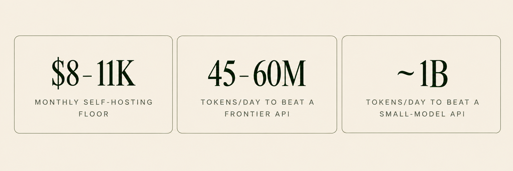

Here's a situation that plays out in engineering teams more often than anyone admits. You've built a prototype on a top-tier frontier model. It handles edge cases gracefully, stakeholders love it, and the launch roadmap is already being drawn up. Then someone asks the uncomfortable question: "What's this going to cost us at 50,000 users?"
You do the math. And the math doesn't work.
This is where the real engineering starts: choosing the right model, or more often the right combination of models, for what you're actually doing in production. The choice between large and small language models isn't a philosophical debate. It's a systems engineering problem, and the answer depends on your task, your traffic, and your constraints.
- There's no agreed parameter count that separates a small model from a large one. Performance on your task is what counts.
- Small models are faster and far cheaper, and a fine-tuned one often matches a frontier model on narrow, high-volume tasks.
- Large models earn their keep on multi-step reasoning, coding, long documents, and agentic planning.
- Most production systems end up hybrid, routing routine requests to a small model and escalating the hard ones.
- APIs usually beat self-hosting unless traffic is both very high and very predictable.
- Evaluate on your own data, and keep evaluating after you ship.
What we actually mean by "large" and "small"
"Large language models" usually means models with tens or hundreds of billions of parameters: OpenAI's GPT-6 models, Anthropic's Claude Sonnet and Opus, Google's Gemini, or Meta's Llama 3.1 405B. They top the leaderboards and run up the cloud bills.
"Small language models" usually means roughly 1 to 15 billion parameters. Current open-weight examples include Microsoft's Phi-4-mini (3.8B), Google's Gemma 4 E4B (4.5B effective parameters), IBM's Granite 4.2 8B, Alibaba's Qwen3.5-9B, and Mistral's Ministral 3 14B, all released in 2025 or 2026 (Phi-4-mini; Gemma 4 E4B; Granite 4.2; Qwen3.5-9B; Ministral 3). The category took off in 2024 with Microsoft's Phi-3 family, Meta's Llama 3 8B, and Mistral 7B.
But there's no agreed-upon parameter count that separates the two. A 14B model is "small" next to GPT-4o (OpenAI has never disclosed its size, but one unverified estimate puts it around 200B parameters, per Ben Abacha et al., 2024) and enormous next to Google's Gemma 3 270M, a 270-million-parameter model built for task-specific fine-tuning and small enough to run on-device. Size alone also says little about quality. A well-trained 7B model can beat a poorly trained 70B model on specific tasks. Microsoft's 3.8B Phi-3-mini, for example, rivals GPT-3.5 overall, beating it on some benchmarks (GSM-8K math, 82.5 vs 78.1) while trailing on others (MMLU, 68.8 vs 71.4) (Microsoft Phi-3 Technical Report). What matters in production is how a model performs on your task, with your data, under your latency and cost constraints.
- Hardware
- Multiple GPUs for a 70B model in FP16 (~140 GB of weights alone)
- Speed
- Slower per request, with longer queues under load
- API price
- $2–10 per 1M input tokens (GPT-6.1 Sol up to GPT-6 Astra)
- Best for
- Multi-step reasoning, coding, long documents, agentic planning
- Hardware
- One GPU (~14 GB of weights for a 7B model in FP16), or slowly on a CPU
- Speed
- Faster per request, suited to sub-second tasks
- API price
- $0.10 per 1M input tokens (GPT-6 Luna, Claude Haiku 5.5)
- Best for
- Classification, extraction, structured output, FAQ retrieval, on-device use
The engineering trade-offs that actually matter
Latency and throughput
Smaller models are simply faster. In NVIDIA's benchmark on H100 GPUs, Llama 3.1 8B on one GPU generated about 220 tokens per second for a single user, with its first token in 19 milliseconds. Llama 3.3 70B on two GPUs managed about 53 tokens per second, with an 82-millisecond first token (NVIDIA NIM benchmarks). Hosted APIs show the same gap. In Artificial Analysis's measurements (October 2026), GPT-6 Luna ran at about 124 tokens per second to GPT-6.1 Sol's 64, and Claude Haiku 5.5 at about 185 to Claude Sonnet 5.5's 109 (OpenAI pair; Anthropic pair).
For autocomplete, real-time classification, or voice assistants, that gap is a hard requirement, not a nice-to-have. It also compounds under load. On a hosted API at peak hours, your request waits in a queue behind everyone else's, and larger models' longer processing times make that wait worse. When self-hosting, a smaller model serves more concurrent requests on the same hardware, which improves the P95 and P99 latencies your SLA actually measures.
Hardware and memory
Memory is the hard constraint. A 70B model in FP16 needs roughly 140 GB of GPU memory for its weights alone, which means at least two 80 GB H100s before counting the KV cache that grows with context length. A 7B model needs about 14 GB and fits on a single mid-range GPU, or even runs, slowly, on a decent CPU with enough RAM.
Quantization shrinks this by storing weights at lower precision. In INT4, that 70B model drops to about 35 GB and can fit on one high-end GPU, though aggressive quantization risks quality, so test it on your own tasks. Methods like AWQ and GPTQ handle 4-bit compression well, and GGUF, the file format used by llama.cpp, is the go-to way to run quantized models on laptops, CPUs, and Apple Silicon. FP8 on NVIDIA's H100 has become the practical sweet spot: NVIDIA reports roughly 1.4–1.5× the throughput of FP16, with MMLU accuracy dropping by less than 1% (NVIDIA TensorRT-LLM).
Accuracy, reasoning, and hallucinations
This is where larger models earn their keep. On multi-step reasoning, ambiguous instructions, cross-domain synthesis, or unfamiliar inputs, they perform meaningfully better. But "better" doesn't mean "necessary." A fine-tuned 7B model that sorts support tickets into 15 categories will likely match a frontier model on that narrow task. The frontier model's broader intelligence is wasted on something that narrow.
Hallucinations are harder to generalize about. Larger models know more, which reduces some factual errors, but a 2024 Nature study found that larger, more instruction-tuned models are more likely to attempt an answer and be confidently wrong where smaller models would have declined (Zhou et al., 2024). Smaller models hallucinate too, but their outputs are easier to constrain with structured formats.
Context windows
Current hosted models from OpenAI, Anthropic, and Google accept around 1 million tokens, even at their cheapest tiers, while open-weight small models often top out lower; Llama 3.1 and the long-context versions of Phi-3, for example, stop at 128K. Supporting a long context isn't the same as using it well, though. For 100-page contracts or whole codebases, larger models stay more coherent. For a customer message or a data extraction task, context length is rarely the bottleneck.
Use cases: where each approach shines
Classification, extraction, and structured output are small-model territory: well-defined, repetitive, high-volume tasks where a fine-tuned small model matches frontier accuracy at a fraction of the cost. Sentiment analysis, entity extraction, intent classification, and JSON generation all fit this pattern. This is usually the first place teams move off frontier models.
Customer support depends on how open-ended it is. A bot answering from a known FAQ with retrieval-augmented generation (RAG) works well on a small model, while one that negotiates complaints across long conversations benefits from a large one. Summarization splits the same way: consistent formats like invoices suit small models, while ambiguous, multi-topic documents need a large model's judgment.
Coding assistants are one of the clearest wins for larger models. Small models can handle code completion and simple generation, but larger ones handle complex logic and architecture far better. Agentic workflows need large-model planning, but not at every step. Sending routine tool calls and data extraction to a small model, and only the planning to a large one, can cut costs sharply. And in specialized domains like healthcare, law, and finance, a small model fine-tuned on domain data often beats a general-purpose large one, because it has learned the field's vocabulary, reasoning patterns, and output formats.
Making models smaller, faster, and cheaper
The gap between large and small models isn't fixed. Beyond quantization, these are the techniques that matter most in production.
Knowledge distillation trains a small "student" model to imitate a large "teacher," learning from the teacher's full output probabilities rather than just the right answers (Hinton et al., 2015). This is how many of the best small models are produced. The payoff can be large: DistilBERT is 40% smaller and 60% faster than Google's BERT while keeping 97% of its language-understanding performance (Sanh et al., 2019).
Speculative decoding lets a small "draft" model propose several tokens that the large model then verifies in one pass. That can make generation 2–3× faster with exactly the same output, giving you big-model quality at closer to small-model speed (Leviathan et al., 2023).
Fine-tuning and prompt engineering are the most accessible tools. Prompting is cheaper and faster to iterate on, while fine-tuning is more reliable but needs representative training data and ongoing upkeep. Either way, a small model trained or prompted with representative task data frequently closes the accuracy gap with a larger model on a specific use case.
Effort settings are the newest lever, and they sit between "use a small model" and "use a big one." OpenAI (reasoning.effort), Anthropic (effort), and Google (thinking_level) let you set how much a model reasons on each request. All three bill that reasoning as output tokens, so lower effort means fewer billed tokens and faster answers, at some cost to quality on hard problems (OpenAI; Anthropic; Google). None publishes a fixed savings figure, so measure it on your own workload. When a frontier model is the right choice but too slow or expensive, try a lower effort setting before you switch models.
Caching and batching help at any model size. Prompt caching reuses the computation for repeated prompt prefixes, and OpenAI and Anthropic discount cached input tokens: 50% on older OpenAI models such as GPT-4o, and 90% or more on current models from both. Continuous batching, in serving frameworks like vLLM and SGLang, keeps GPUs busy by grouping requests dynamically.
The hybrid approach: why it's becoming the default
Most production systems end up with a routing layer that sends different requests to different models. A fast, cheap classifier, often a small model or simple rules, checks each request. Simple ones, like FAQ lookups or data extraction, go to a small model. Complex or ambiguous ones are escalated to a frontier model.
It works because most production traffic is routine. In a typical support application, maybe 70–80% of queries are simple enough for a small model. Research backs up the savings: LMSYS's RouteLLM router cut costs by 35% to more than 85% compared with sending everything to GPT-4, depending on the benchmark, while keeping about 95% of GPT-4's quality (Ong et al., 2024). Stanford's FrugalGPT matched GPT-4 on specific tasks at up to 98% lower cost (Chen et al., 2023). How much you save in production depends on your traffic mix.
In dollars: at 10 million tokens a day, sending everything to GPT-6.1 Sol costs about $1,800 a month. Route 75% of it to GPT-6 Luna and the bill falls to about $520, which is 71% lower before the router's own small cost. (Prices from the table below, with a 50/50 split between input and output tokens.)
![Flowchart titled 'Choosing a model: a starting framework'. It starts with the question: is the task narrowly defined and repetitive? If yes, start with a small model, fine-tuned if needed, then check whether it meets your accuracy bar on your own evaluation set: if yes, deploy the small model; if no, try hybrid routing with a large model for the hard cases. If no and the task needs complex reasoning or broad knowledge, start with a large model, then check whether cost and latency are acceptable: if yes, deploy the large model; if no, try a lower effort setting or hybrid routing. If no and it doesn't need complex reasoning, evaluate small and large models on your own data and deploy the cheapest model that meets your quality bar. Whatever you deploy, monitor it, keep evaluating, and reassess as models and prices change.](images/model-selection-framework.png)
The cost question: it's more than token pricing
API pricing snapshot
Here's what major providers charge per million tokens (standard, non-cached prices, October 2026):
| Model | Input (per 1M tokens) | Output (per 1M tokens) | Context Window |
|---|---|---|---|
| GPT-6.1 Sol | $2.00 | $10.00 | 1.05M |
| GPT-6 Luna | $0.10 | $0.50 | 1.05M |
| Claude Sonnet 5.5 | $2.00 | $10.00 | 1M |
| Claude Haiku 5.5 | $0.10 | $0.50 | 1M |
Sources: OpenAI Pricing, Anthropic Pricing. GPT-6.1 Sol is OpenAI's mid-tier model and GPT-6 Luna its small one. Longer prompts (over 272K tokens at OpenAI, over 100K for Claude Haiku 5.5) cost more.
At both providers, the small model costs 20× less per input token than its larger sibling, and at high volume that gap compounds fast.
Self-hosting economics
Self-hosting an open-weight model like Llama 3.1 70B means renting GPUs. An NVIDIA H100 costs roughly $7–12 per hour on-demand from the major clouds (about $6.90 on AWS, $11 on Google Cloud, and $12.30 on Azure), or about $2–4 on spot instances or GPU clouds like RunPod and Lambda (AWS; Google Cloud; RunPod; Lambda).
Suppose you run Llama 3.1 70B in FP8 on two H100s at $4 per GPU-hour (a multi-year committed rate or a specialist GPU cloud). That's about $5,760 a month for the GPUs alone. Add $2,000–5,000 a month of engineering time for setup, monitoring, and on-call, and your floor is roughly $8,000–11,000 a month regardless of traffic volume.
The same 10 million tokens a day costs about $90 a month on GPT-6 Luna, or $1,800 on GPT-6.1 Sol. Self-hosting only pays off at roughly 45–60 million tokens a day against a frontier API, and around a billion a day against a small-model API, before you count the operational complexity.


Show the numbers
| Tokens per day | Frontier API | Self-hosted | Small-model API |
|---|---|---|---|
| 1M | $180 | $8,000–11,000 | $9 |
| 10M | $1,800 | $8,000–11,000 | $90 |
| 50M | $9,000 | $8,000–11,000 | $450 |
| 100M | $18,000 | $8,000–11,000 | $900 |
| 500M | $90,000 | $8,000–11,000 | $4,500 |
| 1B | $180,000 | $8,000–11,000 | $9,000 |
| 2B | $360,000 | $8,000–11,000 | $18,000 |
Back to that 50,000-user question
So what does the prototype from the opening actually cost? Assume 50,000 daily active users, each sending four messages a day at about 1,000 tokens per message, counting the prompt, the conversation history, and the reply. That's 200 million tokens a day:
| Strategy | Monthly cost |
|---|---|
| Everything on GPT-6.1 Sol | ~$36,000 |
| Hybrid: 75% GPT-6 Luna, 25% GPT-6.1 Sol | ~$10,350 |
| Self-hosted Llama 3.1 70B (two H100s) | $8,000–11,000, if two GPUs can handle your peak traffic |
| Everything on GPT-6 Luna | ~$1,800 |
That's the "math doesn't work" moment in numbers: frontier-only costs 20 times as much as small-model-only. Self-hosting beats the frontier API at this volume but lands in the same range as the hybrid, with more operational burden, and peak traffic may need more GPUs than the two in this scenario. Real chat traffic is input-heavy, since the conversation history gets resent with every message, and input tokens are cheaper, so treat the API figures as upper bounds. The bigger lesson is that the gap between strategies is far larger than the gap between providers.
Total cost of ownership
Token price vs. GPU rental is only part of the comparison. Total cost of ownership also includes:
- Infrastructure: GPUs, memory, networking, storage
- Engineering time: setup, optimization, monitoring, debugging, on-call
- Reliability engineering: failover, redundancy, load balancing
- Cost of errors: hallucinations that need human review, misclassifications, and mistakes that damage customer trust
- Opportunity cost: time spent running inference infrastructure instead of building product
For most teams, especially startups and small-to-mid-sized companies, APIs are the more economical choice unless traffic is both very high and very predictable. Self-hosting makes sense with sustained, predictable high volume, strict data residency or compliance requirements, or a need for deep control through continuous fine-tuning.
Open weights ≠ open source
Models like Llama, Gemma, and Phi publish their trained weights, so you can download, run, fine-tune, and build on them. But "open weight" isn't "open source." The Open Source Initiative's definition also requires the full training and inference code, plus detailed information about the training data (OSI Open Source AI Definition 1.0). Most "open" models don't meet that bar.
More practically, licenses differ. Meta's Llama license allows commercial use, but companies with more than 700 million monthly active users must request a separate license, and it incorporates an acceptable-use policy. Its terms also change between versions: Llama 3 banned using its outputs to improve other large language models, while Llama 3.1 and later only require models trained on Llama outputs to put "Llama" at the start of their name (Llama 3 License; Llama 3.1 License). Gemma 4 uses the standard Apache 2.0 license, while earlier Gemma versions carry Google's own terms. Read the license before you build.
Privacy, compliance, and data residency
Sometimes the choice is made before performance enters the picture. With healthcare records (HIPAA), financial data, or strict data residency rules (GDPR), sending data to a third-party API may not be an option. Where it is, it requires agreements and configuration, such as a business associate agreement (BAA), zero-data-retention settings, or regional endpoints, and some models and features may be excluded.
Self-hosted small models have a real advantage here. Running inside your own VPC removes the model provider from the data path and gives you full auditability: you can log every input and output, trace every decision, and demonstrate compliance in ways hosted APIs make harder. Your logs, vector databases, and backups must still stay in the right region, though. Since large models are much harder to self-host, the privacy argument usually favors small ones.
Evaluate, then keep evaluating
The most important step is also the one most comparisons leave out: evaluate candidate models on your actual data. Not public benchmarks, and not vibes from a chat window, but representative samples of your real inputs, measured against the outputs you need.
Build an evaluation set that includes edge cases and the strange inputs real users send. Define your metrics (accuracy, latency, cost per request, format compliance) and look at tail behavior, not just averages. The results often surprise: the 7B model you dismissed may nail 95% of your cases after fine-tuning, while the frontier model may hallucinate on a category that matters to your business.
Don't trust benchmark leaderboards as production predictors. Benchmarks measure specific capabilities under controlled conditions, and your production workload is neither. Use them for initial screening, not final decisions.
Then keep evaluating after launch. Track quality on live traffic with human sampling, automated checks, or both. Watch for drift as real inputs diverge from your test set, set up alerts for quality drops, and feed outputs that users or downstream systems corrected back into your evaluation data. Models and prices change fast, and the best option six months ago may now be beaten by a new release at half the cost. Put your model behind a clean interface you can swap without rewriting your application.
So... which one should you use?
The honest answer is "it depends," but you now know what it depends on. Start with the smallest model that could plausibly work and evaluate it rigorously. If it meets your accuracy bar, you've saved significant money and complexity. If it falls short, try fine-tuning, a larger model, or a hybrid router. Don't start with the most expensive frontier model and plan to optimize down later, because that path bakes in assumptions that are hard to unwind.
For narrow, high-volume tasks like classification, extraction, and FAQ retrieval, start small. For complex reasoning, coding, and agentic work, expect to need a large model for at least part of the pipeline. Most real applications end up using both. The best model is the one that meets your quality bar at the lowest total cost and complexity, with enough headroom for the unexpected.